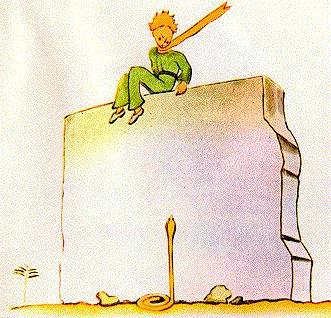
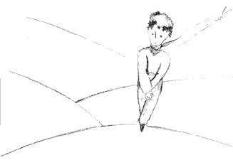

Moi je me taisais.
Il y avait, à côté du puits, une ruine de vieux mur de pierre. Lorsque je revins de mon travail, le lendemain soir, j'aperçus de loin mon petit prince assis là-haut, les jambes pendantes. Et je l'entendis qui parlait:
- Tu ne t'en souviens donc pas ? disait-il. Ce n'est pas tout à fait ici !
Une autre voix lui répondit sans doute, puisqu'il répliqua:
- Si! Si! c'est bien le jour, mais ce n'est pas ici l'endroit...
Je poursuivis ma marche vers le mur. Je ne voyais ni n'entendais toujours personne. Pourtant le petit prince répliqua de nouveau:
- ... Bien sûr. Tu verras où commence ma trace dans le sable. Tu n'as qu'a m'y attendre. J'y serai cette nuit.
J'étais à vingt mètres du mur et je ne voyais toujours rien.
Le petit prince dit encore, après un silence:
- Tu as du bon venin ? Tu es sûr de ne pas me faire souffrir longtemps ?
Je fis halte, le cœur serré, mais je ne comprenais toujours pas.
- Maintenant va-t'en, dit-il... je veux redescendre !
Alors j'abaissai moi-même les yeux vers le pied du mur, et je fis un bond ! Il était là, dressé vers le petit prince, un de ces serpents jaunes qui vous exécutent en trente secondes. Tout en fouillant ma poche pour en tirer mon revolver, je pris le pas de course, mais, au bruit que je fis, le serpent se laissa doucement couler dans le sable, comme un jet d'eau qui meurt, et, sans trop se presser, se faufila entre les pierres avec un léger bruit de métal. 
Je parvins au mur juste à temps pour y recevoir dans les bras mon petit bonhomme de prince, pâle comme la neige.
- Quelle est cette histoire-là ! Tu parles maintenant avec les serpents !
J'avais défait son éternel cache-nez d'or. Je lui avais mouillé les tempes et l'avais fait boire. Et maintenant je n'osais plus rien lui demander. Il me regarda gravement et m'entoura le cou de ses bras. Je sentais battre son cœur comme celui d'un oiseau qui meurt, quand on l'a tiré à la carabine. Il me dit:
- Je suis content que tu aies trouvé ce qui manquait à ta machine. Tu vas pouvoir rentrer chez toi...
- Comment sais-tu !
Je venais justement lui annoncer que, contre toute espérance, j'avais réussi mon travail !
Il ne répondit rien à ma question, mais il ajouta:
- Moi aussi, aujourd'hui, je rentre chez moi...
Puis, mélancolique:
- C'est bien plus loin... c'est bien plus difficile...
Je sentais bien qu'il se passait quelque chose d'extraordinaire. Je le serrais dans les bras comme un petit enfant, et cependant il me semblait qu'il coulait verticalement dans un abîme sans que je pusse rien pour le retenir...
Il avait le regard sérieux, perdu très loin:
- J'ai ton mouton. Et j'ai la caisse pour le mouton. Et j'ai la muselière...
Et il sourit avec mélancolie.
J'attendis longtemps. Je sentais qu'il se réchauffait peu à peu:
- Petit bonhomme, tu as eu peur...
Il avait eu peur, bien sûr ! Mais il rit doucement:
- J'aurai bien plus peur ce soir...
De nouveau je me sentis glacé par le sentiment de l'irréparable. Et je compris que je ne supportais pas l'idée de ne plus jamais entendre ce rire. C'était pour moi comme une fontaine dans le désert.
- Petit bonhomme, je veux encore t'entendre rire...
Mais il me dit:
- Cette nuit, ça fera un an. Mon étoile se trouvera juste au-dessus de l'endroit où je suis tombé l'année dernière...
- Petit bonhomme, n'est-ce pas que c'est un mauvais rêve cette histoire de serpent et de rendez-vous et d'étoile...
Mais il ne répondit pas à ma question. Il me dit:
- Ce qui est important, ça ne se voit pas...
- Bien sûr...
- C'est comme pour la fleur. Si tu aimes une fleur qui se trouve dans une étoile, c'est doux, la nuit, de regarder le ciel. Toutes les étoiles sont fleuries.
- Bien sûr...
- C'est comme pour l'eau. Celle que tu m'as donnée à boire était comme une musique, à cause de la poulie et de la corde... tu te rappelles... elle était bonne.
- Bien sûr...
- Tu regarderas, la nuit, les étoiles. C'est trop petit chez moi pour que je te montre où se trouve la mienne. C'est mieux comme ça. Mon étoile, ça sera pour toi une des étoiles. Alors, toutes les étoiles, tu aimeras les regarder... Elles seront toutes tes amies. Et puis je vais te faire un cadeau...
Il rit encore.
- Ah! petit bonhomme, petit bonhomme j'aime entendre ce rire !
- Justement ce sera mon cadeau... ce sera comme pour l'eau...
- Que veux-tu dire ?
- Les gens ont des étoiles qui ne sont pas les mêmes. Pour les uns, qui voyagent, les étoiles sont des guides. Pour d'autres elles ne sont rien que de petites lumières. Pour d'autres qui sont savants elles sont des problèmes. Pour mon businessman elles étaient de l'or. Mais toutes ces étoiles-là se taisent. Toi, tu auras des étoiles comme personne n'en a...
- Que veux-tu dire ?
- Quand tu regarderas le ciel, la nuit, puisque j'habiterai dans l'une d'elles, puisque je rirai dans l'une d'elles, alors ce sera pour toi comme si riaient toutes les étoiles. Tu auras, toi, des étoiles qui savent rire !
Et il rit encore.
- Et quand tu seras consolé (on se console toujours) tu seras content de m'avoir connu. Tu seras toujours mon ami. Tu auras envie de rire avec moi. Et tu ouvriras parfois ta fenêtre, comme ça, pour le plaisir... Et tes amis seront bien étonnés de te voir rire en regardant le ciel. Alors tu leur diras: "Oui, les étoiles, ça me fait toujours rire !" Et ils te croiront fou. Je t'aurai joué un bien vilain tour...
Et il rit encore.
- Ce sera comme si je t'avais donné, au lieu d'étoiles, des tas de petits grelots qui savent rire...
Et il rit encore. Puis il redevint sérieux:
- Cette nuit... tu sais... ne viens pas.
- Je ne te quitterai pas.
- J'aurai l'air d'avoir mal... j'aurai un peu l'air de mourir. C'est comme ça. Ne viens pas voir ça, ce n'est pas la peine...
- Je ne te quitterai pas.
Mais il était soucieux.
- Je te dis ça... c'est à cause aussi du serpent. Il ne faut pas qu'il te morde... Les serpents, c'est méchant. Ça peut mordre pour le plaisir...
- Je ne te quitterai pas.
Mais quelque chose le rassura:

- C'est vrai qu'ils n'ont plus de venin pour la seconde morsure...
Cette nuit-là je ne le vis pas se mettre en route. Il s'était évadé sans bruit. Quand je réussis à le rejoindre il marchait décidé, d'un pas rapide. Il me dit seulement:
- Ah! tu es là...
Et il me prit par la main. Mais il se tourmenta encore:
- Tu as eu tort. Tu auras de la peine. J'aurai l'air d'être mort et ce ne sera pas vrai...
Moi je me taisais.
- Tu comprends. C'est trop loin. Je ne peux pas emporter ce corps-là. C'est trop lourd.
Moi je me taisais.
- Mais ce sera comme une vieille écorce abandonnée. Ce
n'est pas triste les vieilles écorces...
Moi je me taisais.
Il se découragea un peu. Mais il fit encore un effort:
- Ce sera gentil, tu sais. Moi aussi je regarderai les étoiles. Toutes les étoiles seront des puits avec une poulie rouillée. Toutes les étoiles me verseront à boire...
Moi je me taisais.
- Ce sera tellement amusant ! Tu auras cinq cents millions de grelots, j'aurai cinq cents millions de fontaines...
Et il se tut aussi, parce qu'il pleurait...
- C'est là. Laisse-moi faire un pas tout seul.

Et il s'assit parce qu'il avait peur.
Il dit encore:
- Tu sais... ma fleur... j'en suis responsable ! Et elle est tellement faible ! Et elle est tellement naïve. Elle a quatre épines de rien du tout pour la protéger contre le monde...
Moi je m'assis parce que je ne pouvais plus me tenir debout. Il dit:
- Voilà... C'est tout...
Il hésita encore un peu, puis il se releva. Il fit un pas. Moi je ne pouvais pas bouger.
Il n'y eut rien qu'un éclair jaune près de sa cheville. Il demeura un instant immobile. Il ne cria pas. Il tomba doucement comme tombe un arbre. Ça ne fit même pas de bruit, à cause du sable.
| Chapitre XXV | |
Capítulo XXV |
| Index | Capítulo XXVI | |
| Fin | Fin |